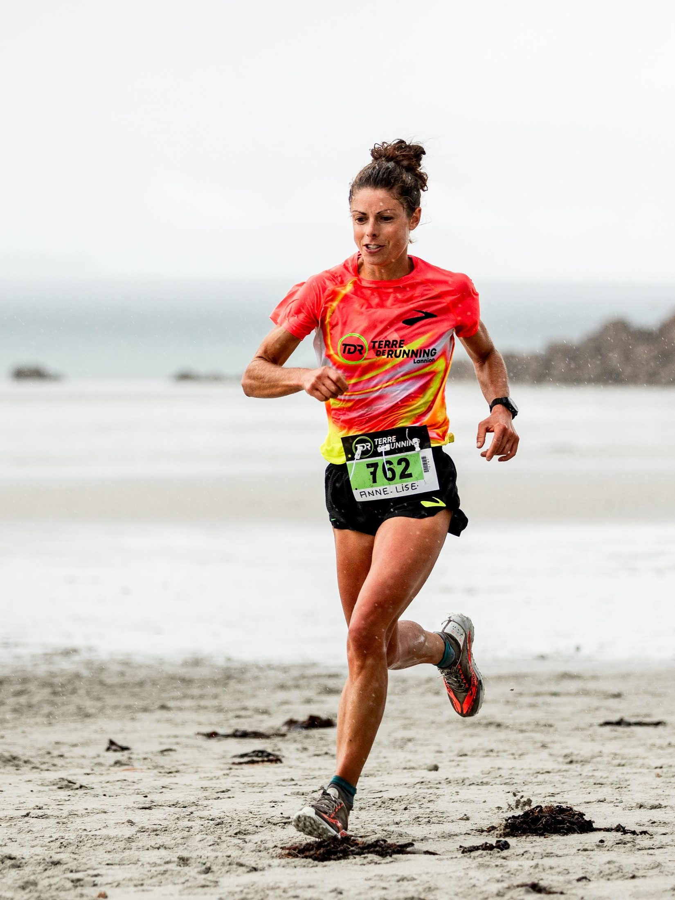
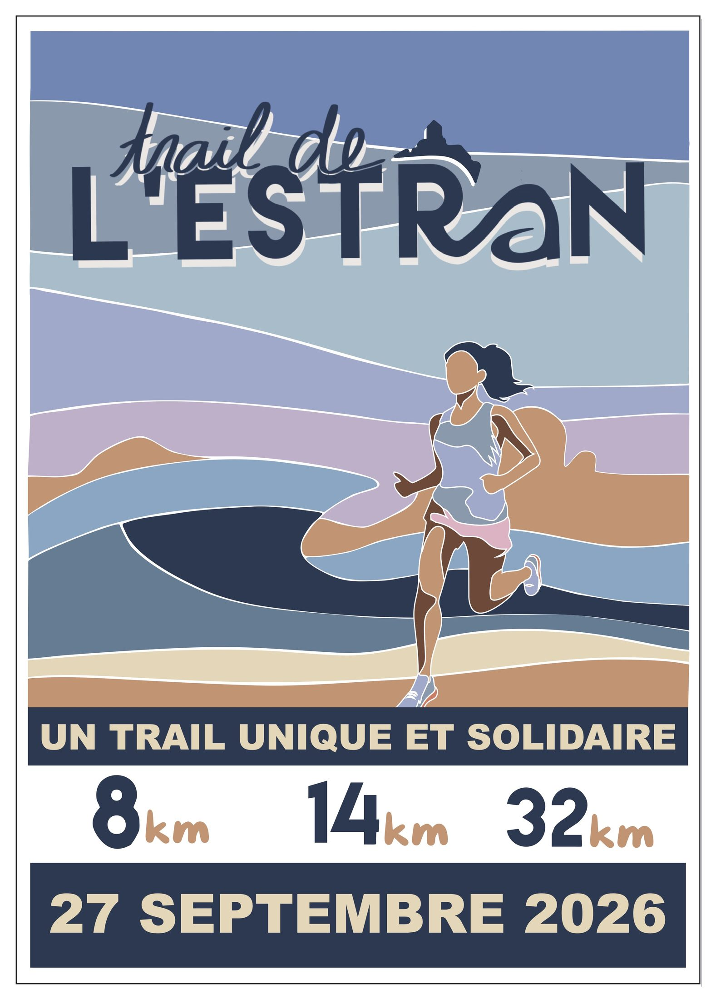
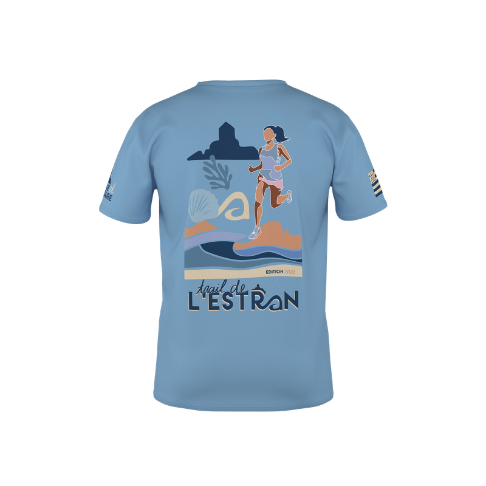
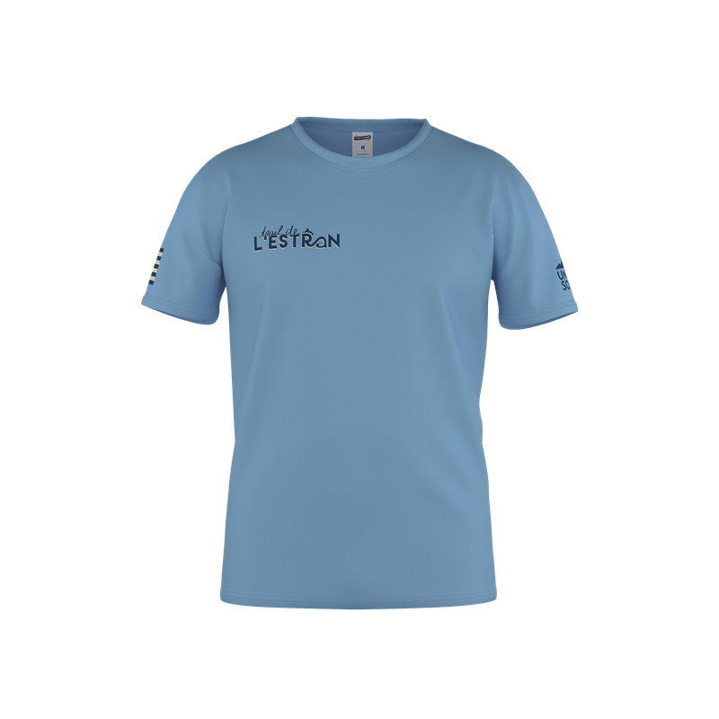

Le Trail de l'Estran est un événement solidaire au profit des associations Enfants de Trestel, du Centre hospitalier, de rééducation et de réadaptation de Trestel, et Ouvrir les Yeux.
Depuis le petit port de la Roche Jaune jusqu'à la magnifique plage de Trestel, vous ferez un voyage unique au rythme de la marée, dans des paysages sauvages, colorés par la mer et balayés par la brise.
Vous passerez là où vous n'oseriez pas vous aventurer seul, plongés dans l'insolite et les contrastes de l'estran, tantôt en mer, tantôt sur terre, à la recherche des plaisirs simples de la course à pied et de la découverte.
L'Enfer, Beg Vilin, Pors Hir, le Gouffre, Gouermel, Pellinec, Port Blanc, les Dunes, le Royau… autant de lieux emblématiques à parcourir avant de franchir la ligne d'arrivée sur la plage de Trestel !




Le tee-shirt de la course : 25 €
Disponible en achat direct ou en option payante lors de l'inscription aux différentes épreuves.
Il ne vous fera peut-être pas courir plus vite… mais vous aurez clairement
plus de style à l'arrivée.
Léger, confortable et prêt à affronter tous vos exploits (ou vos pauses),
c'est le compagnon idéal.
À porter sans modération, même sans dossard.
Merci à nos partenaires - sans eux, cette course n'existerait pas.